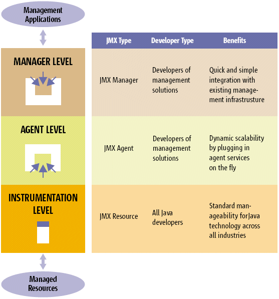

JMX Tiered Architecture
JMX technology provides a tiered architecture where managed resources
and management applications can be integrated in the plug-and-play
approach as shown in Figure 1. A given resource is instrumented by one
or more Java objects known as Managed Beans (or MBeans), which are
registered in a core managed object server known as the MBean server.
This server acts as a management agent and can run on most Java-enabled
devices.

JMX Tiered Architecture
As the figure demonstrates, there are three tiers or levels
in this architecture: instrumentation, agent, and manager.
Legal Notices